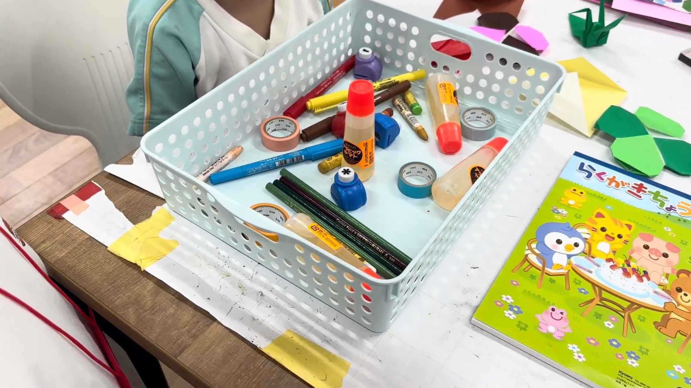
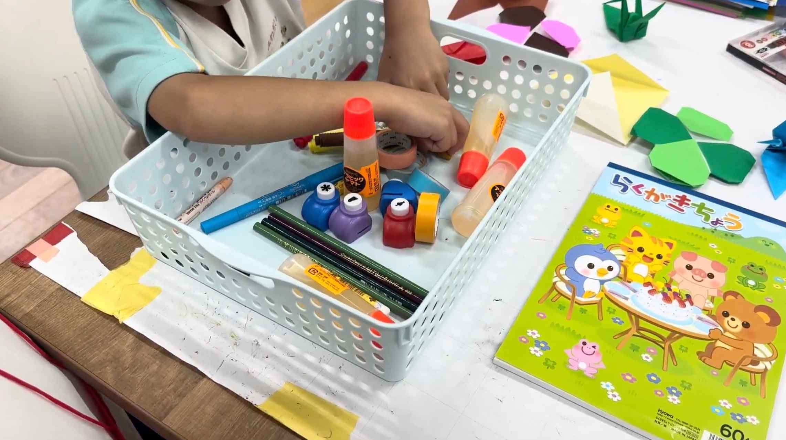

どこかな？ゲーム
ゲームのきほん
- 何をする？：文房具が大量に入ったカゴの中から一つの文房具を手探りのみで探し出すゲーム
- 対象年齢：全年齢対象
- プレイ人数：２人推奨、複数人も可
- プレイ時間：３〜5分
準備するもの
- カゴ(文房具が15個以上入るサイズのもの)
- 文房具を5種類以上、それぞれ3つずつ（刃物や怪我のしやすいものは選ばない）
遊び方


- カゴの中に用意した文房具を全て入れ、文房具を探す人を決める。
- 探す人は目を瞑り、探さない人は取り出して欲しい文房具が何かを探す人に伝える。
- 探す人は言われた文房具を手の感触だけで探し、取り出す。
- 全員目を開き、指定された文房具が取り出せたかを確かめる。
- 役割を変え、1〜4を繰り返す。
楽しく遊ぶためのヒント
- どの文房具がどんな形をしているかを事前に確認するとゲームがしやすくなる。
- 似た形の文房具を入れると難易度が高くなり、より楽しめる。
- みんなでするときは全員違うものを取り出してみよう！